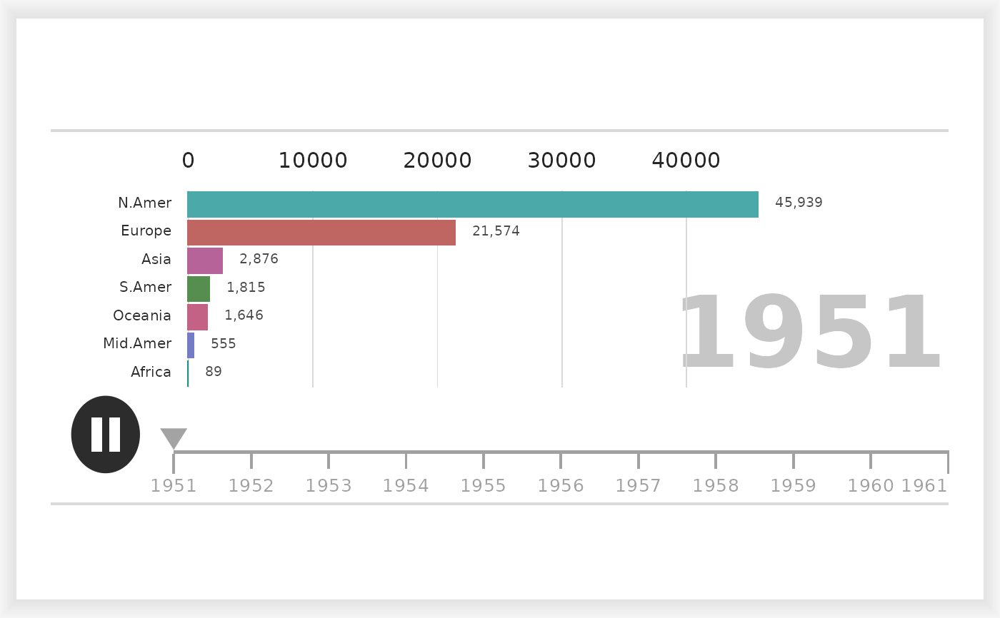

The frame is a single ggplot2::ggplot laid out in card units, so the title, axis, bars, timeline and footer all live in one coordinate system and land on fixed positions rather than wherever a layout engine puts them. That is what keeps the panel from shifting sideways between frames.
Arguments
- x
A
ggraceobject fromggrace().- frame
Frame index, between 1 and the number of frames.
Value
A ggplot2::ggplot object.
Details
Frames are set in Lato, which the package registers with 'systemfonts'.
Draw them on a device that understands registered fonts, such as
ragg::agg_png(), which is what animate_race() uses. On other devices
pass family = "" to ggrace() to fall back to the device default.
Examples
phones <- as.data.frame.table(datasets::WorldPhones, responseName = "phones")
names(phones)[1:2] <- c("year", "region")
phones$year <- as.numeric(as.character(phones$year))
race <- ggrace(phones, phones, region, year, top_n = 7, family = "")
race_frame(race, 1)
